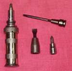
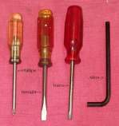
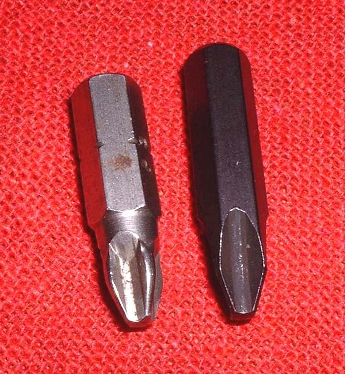

A screw spins without moving, the tool slips, the head is round, or a bolt snaps off. This happens most with steel cross-head screws in aluminium engine cases, and with old bolts in rusty parts. The right tool and a gentle first approach save the part.
Is it safe to ride?
Ride only if the fastener holds nothing important. A loose or damaged fastener on a wheel, brake, steering or engine mount: do not ride until it is fixed.
Quick checks first
- Is the tool the right size and fully seated, with the recess clean?
- Is it a screw into an engine case, a bolt through a part, or a bolt that holds a brake or wheel?
- Is the head rounded, or still sharp?
- Has the bolt rusted into place, or was it over-tightened?
- Do you have penetrating oil, an impact driver and a drill?
Diagnose it step by step
1Is the head still square or has a clean recess?
- Yes: soak with penetrating oil. Try the correct size 6-point socket or bit: Choose and use spanners and sockets without rounding fasteners. Go to step 2 if it still does not move.
- No, rounded: go to step 3.
2Is it a cross-head or hex screw into an aluminium case?
- Yes: use an impact driver with the right bit: Loosen a tight screw with an impact driver. Support the part behind it.
- No (a bolt through a bracket or frame): heat and oil may help; use a longer handle and a steady pull.
3Can you grip the head?
- Yes: try grinding paste in the recess, a slightly smaller socket tapped on, or locking pliers.
- No: go to step 4.
4Has the head snapped off, with the thread inside?
- Yes: Remove a rounded, seized or broken fastener: drill and extract.
- If an extractor breaks, stop. Take it to a workshop.
5Is the fastener on a brake, wheel, steering or engine mount?
- Yes: stop. Take it to a workshop. See Check engine mounting bolts.
What happens if you force it: the head rounds more, a cast part cracks, or a hardened extractor snaps and cannot be drilled out.
Causes, most likely first
| Cause | How to confirm | Fix |
|---|---|---|
| Ill-fitting tool | Tool wobbles on head | Choose and use spanners and sockets without rounding fasteners |
| Steel screw seized in aluminium | Cross-head screw in a case, tool slips | Loosen a tight screw with an impact driver |
| Rounded head | Head corners worn smooth | Remove a rounded, seized or broken fastener |
| Broken bolt | Head sheared, stump in the hole | Remove a rounded, seized or broken fastener |
| Missing basic tools | No impact driver or right-size socket | Build a basic motorcycle tool kit |